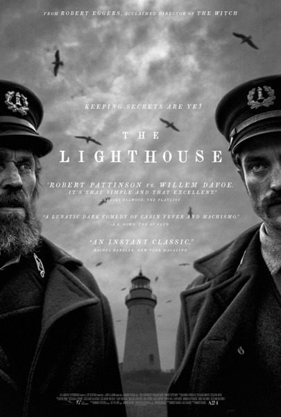
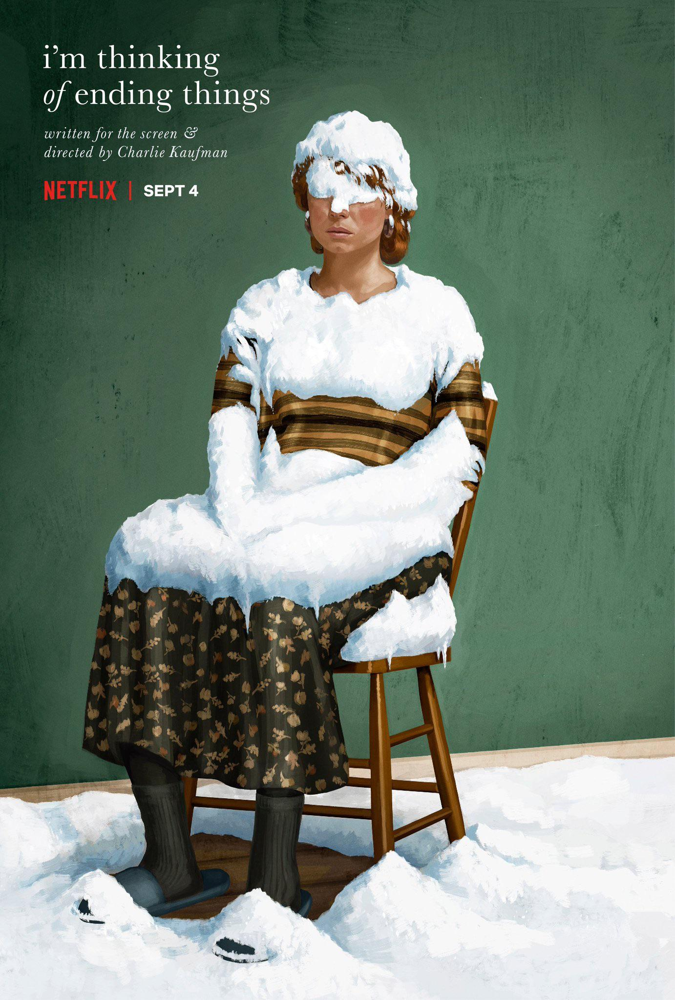
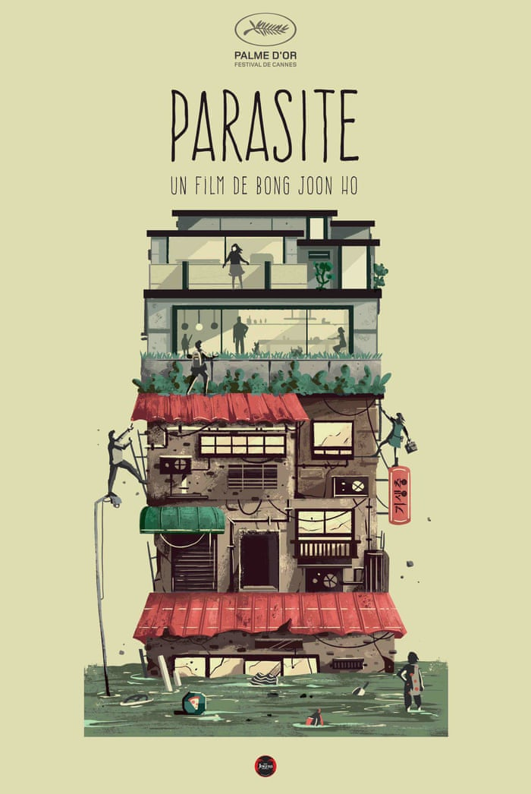

Source
Learn more about "Eternal Sunshine of the Spotless Mind"
| Movie Title | Release Date | My Rating |
|---|---|---|
| The Witch | 2015 | 4.5/5 |
| Sorry to Bother You | 2018 | 4.5/5 |
| The Lobster | 2015 | 4.5/5 |

Source
Learn more about "The Lighthouse"
Genres: Psychological Thriller, Psychological Horror
The Lighthouss is an amazing film that depicts the effects of isolation tremndously.
The acting is top tier and them speaking in that old english style shows how immensely talented the writers Robert and Max Eggers are.

Source
Trailer
Genres: Surrealism, Psychological Drama
"i'm thinking of ending things" is not a movie for people who get bored easily but it does award those who are able to sit and really listen.
It's not a movie that will even really make too much sense after the first watch but I firmly believe that if you devote yourself to this film you will find something magical.
Source
Learn more about "Eternal Sunshine of the Spotless Mind"
Genres: Psychological Drama, Romance
An especially odd role for Jim Carrey but man, does he pull it off exceptionally.
This movie is heart wrenching, it paints a picture of human flaws wonderfully and most importantly, it left me pondering its questions for days upon days.

Source
Learn more about "Parasite"
Genres: Black Comedy, Drama
This movie deserves all the praise it gets and even more.
I wont say too much as I believe its better to go into this film blind but all the performances in it are amazing.
That being said, this movie truly excels in its writing, big props to Bong Joon-ho.

Source
Learn more about "Eraserhead"
Genres: Surrealism, Psychological Horror
This is the only movie on the entier list where I struggle to actually write anything about it;
To put it simply, its an odd, very odd movie, most likely unlike anything you have ever seen before.
From the sound design to the performances from the actors. This is the film that really cemented David Lynch as one of the greats and its not one to overlook.
My entier perception of film as an art form was changed by this movie so, if you do end up watching anything on this list, watch this one.
Click here to fill out a quick survey!